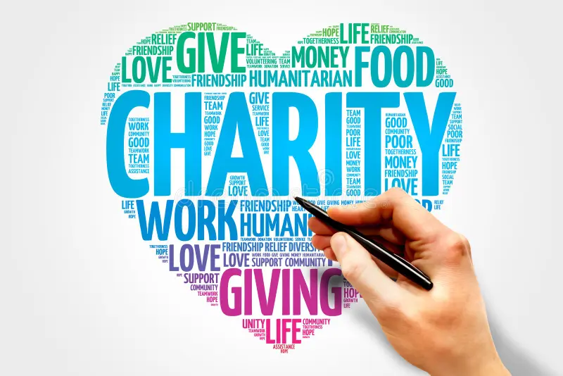

About Us

Who We Are
Hope Charity Drive is a non-profit organization dedicated to uplifting underprivileged communities. Started in 2020, we have helped over 10,000 families across the country.
Our Mission
We believe in a world where everyone has access to basic necessities. We work tirelessly to bridge the gap between resources and needs, ensuring transparency and love in every action we take.
Impact timeline
A horizontal timeline works great:
*2023 — Started initiative
*2024 — Reached 500 beneficiaries
*2025 — Expanded to 2 cities
*Add 3-6 milestones only.
How we work
1.Identify needs with local partners
2.Fund & deliver support
3.Track results and share updates
